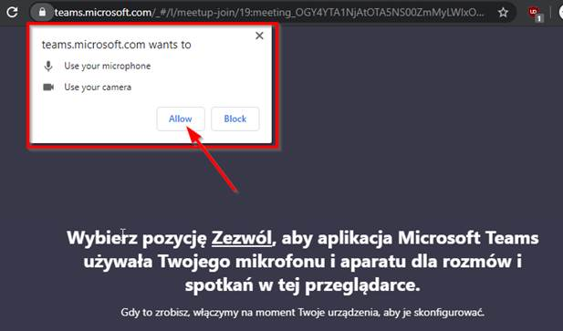

Nauka online
Formy nauki na studiach podyplomowych w AFiB Vistula. Aplikacja TEAMS.
- Studia podyplomowe w AFiB Vistula prowadzone są w formie stacjonarnej
- W okresie pandemii wprowadzono formę zajęć online – wykłady ‘na żywo’ z możliwością nagrywania każdego spotkania. W tym przypadku zajęcia odbywają się również zgodnie z przesłanym drogą mailową przez Dział Studiów Podyplomowych, planem zajęć, tzn z reguły od godz. 9.00 do 16.00
- Słuchacz, najpóźniej tydzień przed rozpoczęciem studiów, otrzymuje instrukcję do utworzenia adresu mailowego w domenie vistula:
Poniżej znajdują się dane niezbędne do wygenerowania dla Pana/Pani konta mailowego, którym będzie można zalogować się do większości serwisów Internetowych dostępnych na Vistuli. Konto będzie w pełni aktywne następnego dnia po stworzeniu.
Imię i nazwisko Słuchacza
Identyfikator: najczęściej numer Pesel
Hasło: złożone z 10 znaków
Używając powyższych danych na stronie https://generate.vistula.edu.pl/ należy wygenerować adres mailowy w domenie @stu.vistula.edu.pl
Przy logowaniu do serwisów Vistuli należy wybrać opcję „logowanie Office365” i zalogować się używając vistulowego adresu mailowego (zdjęcie poniżej).

4. TEAMS jest aplikacją, z której korzysta uczelnia podczas nauki online, do której najpóźniej 2 dni przed zajęciami słuchacz otrzymuje na maila zaproszenie do zajęć
TEAMS - instrukcja dla słuchacza
W celu zalogowania na vistulową skrzynkę pocztową, należy wejść na stronę: http://mail.vistula.edu.pl, po czym następuje przekierowanie na pocztę Office 365, gdzie można dokonać zmiany swojego hasła do skrzynki pocztowej.
Instrukcja obsługi programów Microsoft Teams zawiera informacje, jak dołączyć do spotkania w aplikacji Microsoft Teams.
Aby uczestniczyć w zajęciach należy posiadać komputer z głośnikami i mikrofonem, kamera Internetowa nie jest wymagana.
Wspierane przeglądarki Internetowe to:
- Internet Explorer 11,
- Microsoft Edge,
- najnowsza wersja przeglądarki Chrome,
- najnowsza wersja przeglądarki Firefox.
Metadane wszystkich spotkań, które się odbywają są zapisywane na serwerze Microsoft Teams (ile trwało spotkanie, o której się rozpoczęło, ile osób w nim uczestniczyło i jaka była jakość połączenia).
Uczestnictwo w zajęciach online jest wymagane, tak jak w zajęciach na uczelni. Nie uczęszczanie na zajęcia online może skutkować niezaliczeniem danych zajęć.
Po wejściu na stronę ze spotkaniem w Microsoft Teams, można wybrać czy podłączyć się poprzez stronę internetową, czy poprzez aplikację Microsoft Teams. W każdym trybie podłączenia spotkanie będzie wyglądało bardzo podobnie.

Przy dołączaniu przez przeglądarkę Internetową, może się wyświetlić komunikat o udostępnieniu mikrofonu i kamery dla Microsoft Teams. Należy wybrać "Allow" czyli „Zezwól”.

Na następnym ekranie wpisz swoje imię, nazwisko i numer albumu. Następnie naciśnij przycisk „dołącz”.
UWAGA. Podanie nieprawdziwego imienia i nazwiska, bądź tylko jego skrót, może oznaczać niewpuszczenie na spotkanie!
Po dołączeniu do spotkania, należy poczekać, aż prowadzący zajęcia wpuści na to spotkanie. Po rozpoczęciu zajęć, zobaczycie obraz z kamery prowadzącego zajęcia. Aplikacja automatycznie będzie pokazywać tę osobę która mówi, bądź udostępnia swój pulpit.
W pasku nawigacyjnym na ekranie możecie włączać i wyłączać kamerę i mikrofon, udostępniać zawartość pulpitu (o ile prowadzący dał wam taką możliwość), pokazać okienko czatu, pokazać okno z uczestnikami spotkania.
Pomoc
Pomoc informatyczną można uzyskać pisząc na adres icthelp@vistula.edu.pl.